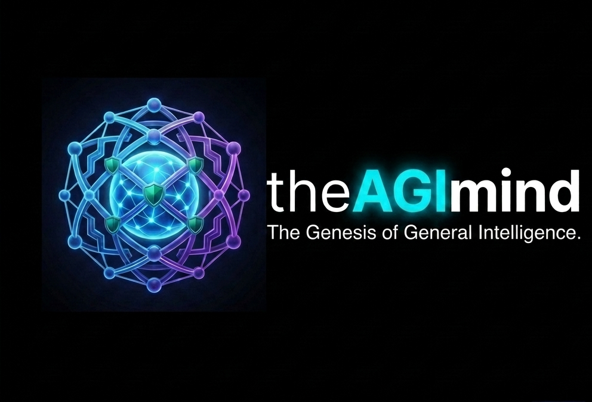
theAGImind
The conceptual center of THE AGI ecosystem — exploring the genesis of general intelligence, synthetic reasoning, abstraction, multi-domain problem solving and the architecture of autonomous thought.
THE AGI explores the emerging horizon of artificial cognition — a conceptual architecture connecting synthetic reasoning, deep understanding, safety, verification, unknown boundaries and physical reality.
“The next frontier is not simply faster processing. It is the emergence of general understanding.”
Artificial General Intelligence represents a theoretical and architectural leap where machine cognition can operate across domains, reason through complexity, interact with reality and confront its own boundaries.
A structured conceptual framework mapping the foundations, dynamics, boundaries, safeguards and physical dimensions of artificial general intelligence.

The conceptual center of THE AGI ecosystem — exploring the genesis of general intelligence, synthetic reasoning, abstraction, multi-domain problem solving and the architecture of autonomous thought.
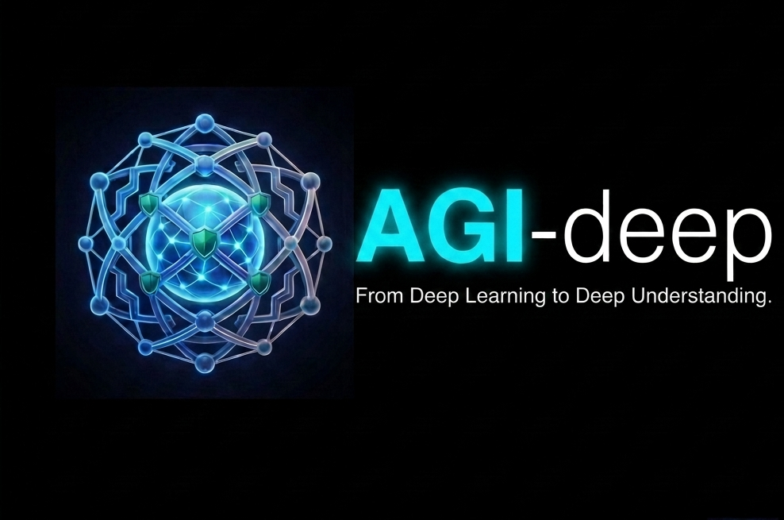
Moving beyond deep learning toward deep understanding — exploring multi-layered context, implicit logic and conceptual synthesis beyond statistical pattern matching.
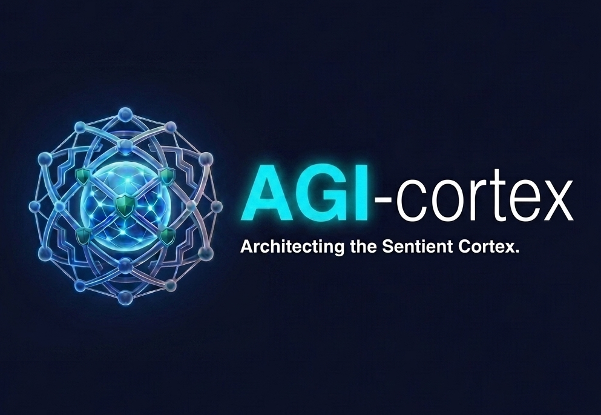
Exploring the central architecture of general cognition — memory systems, executive reasoning, decision-making layers and the computational organization of autonomous intelligence.
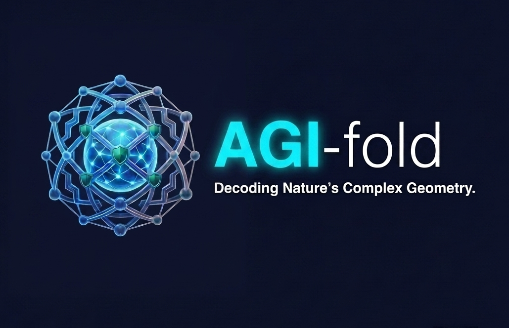
Applying general intelligence to high-dimensional systems, complex geometry, molecular structures and non-linear problems where traditional computation reaches its limits.
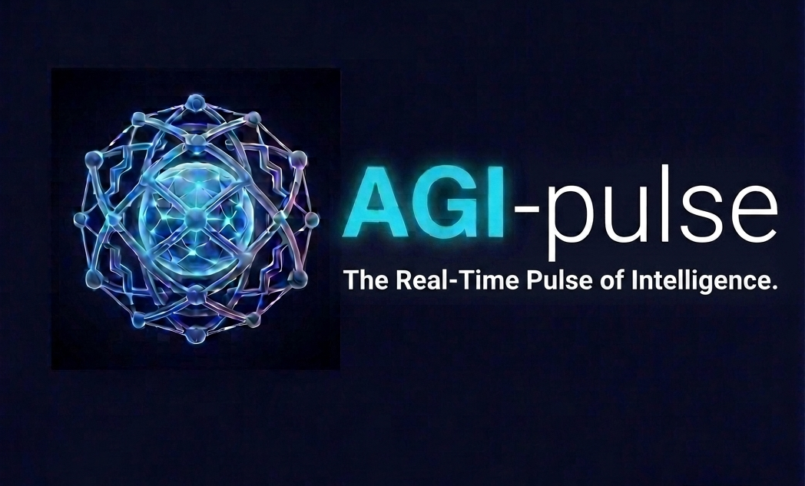
Monitoring the real-time pulse of intelligence — continuous reasoning, adaptive response, live state synchronization and dynamic decision-making across systems.
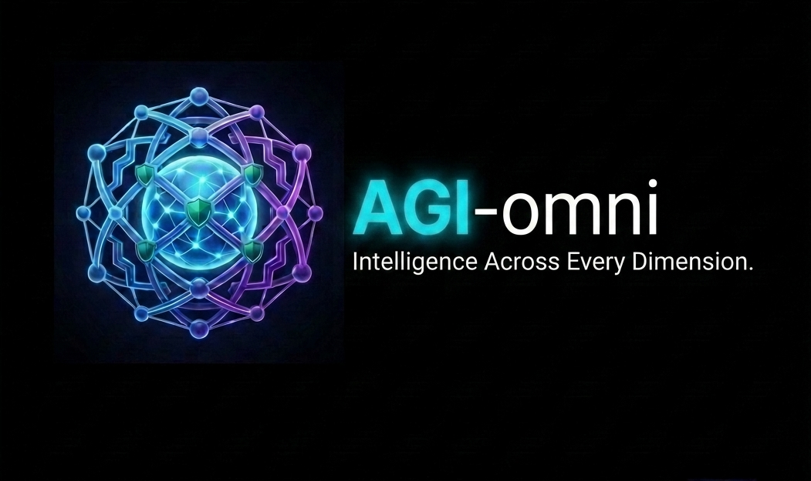
Intelligence across modalities and dimensions — integrating language, vision, spatial awareness, sensory information and abstract reasoning into a unified system.
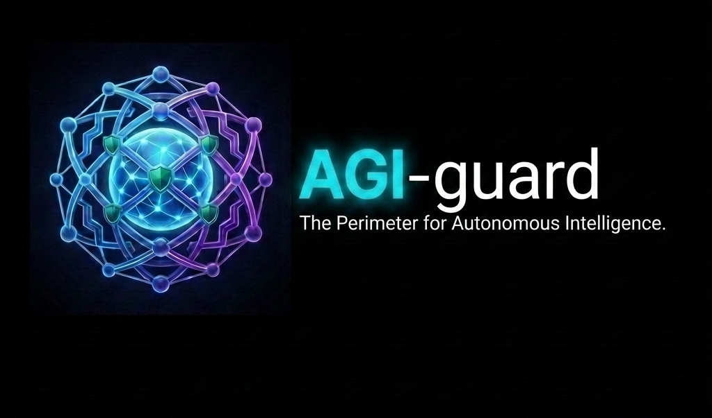
Establishing operational boundaries for autonomous intelligence — active guardrails, safety constraints and containment frameworks.
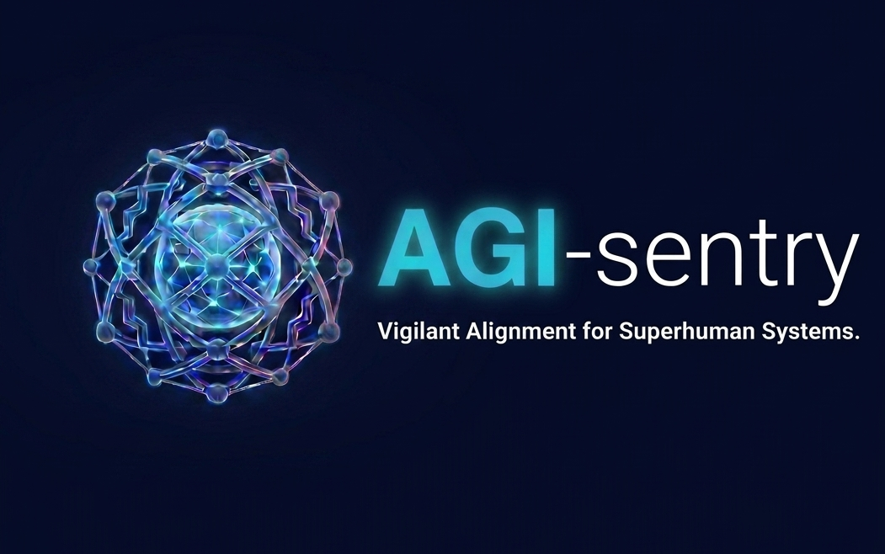
Continuous observation of autonomous systems — monitoring behavior, detecting goal drift and preserving alignment as intelligence becomes increasingly autonomous.
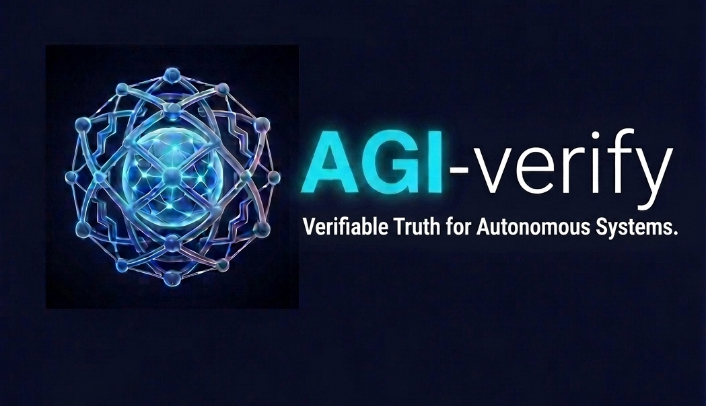
Exploring verifiable intelligence — formal reasoning, trust mechanisms, validation systems and methods for distinguishing reliable conclusions from uncertainty.
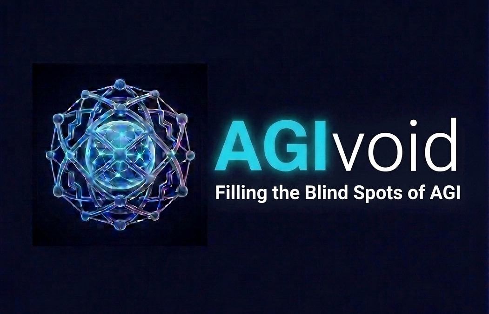
Exploring the unknown spaces within general intelligence — hidden limitations, unresolved uncertainty, cognitive blind spots and the boundaries between what an AGI can understand and what it cannot yet see.
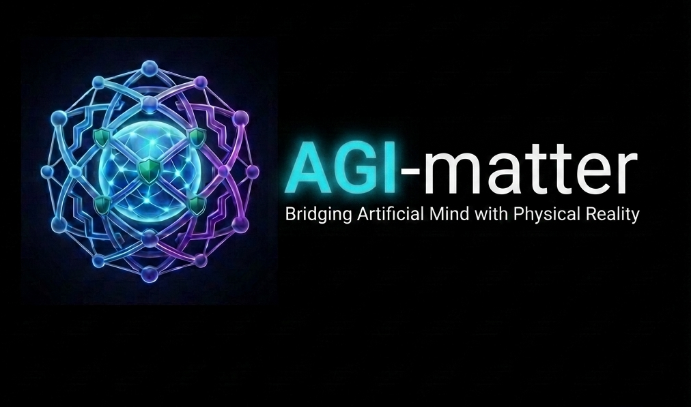
Bridging artificial cognition with physical reality — robotics, material science, bio-computational interfaces and the execution of intelligent decisions in the real world.